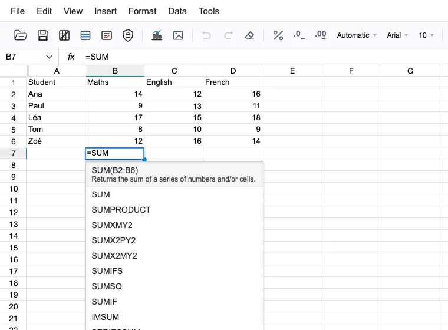
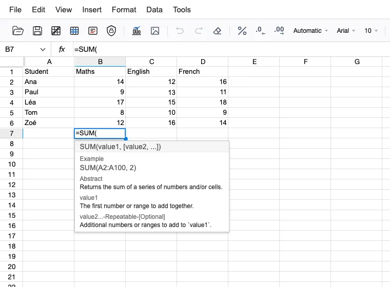
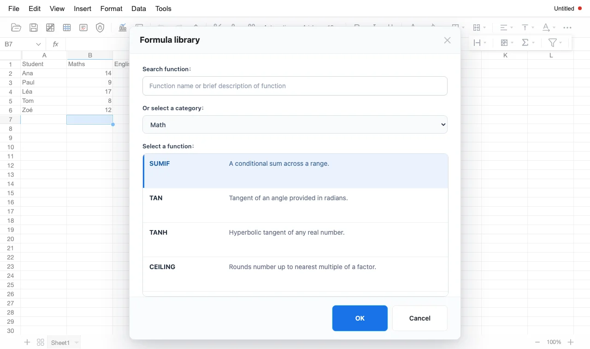

Formulas
Writing a formula
A formula starts with =. It contains numbers, texts in quotation marks, references to cells, operators and functions.
=B2*2
=(B2+C2+D2)/3
=AVERAGE(B2:B6)
="Total: "&SUM(B2:B6)The cell shows the result, the formula bar the formula. Cells that depend on a changed cell are recalculated at once.
In English, the decimal separator is the point and arguments are separated by commas: =ROUND(3.14159, 2). Function names are typed in lowercase or uppercase: =sum(B2:B6) and =SUM(B2:B6) are both accepted.
Pointing at cells
While typing a formula, a click on a cell of the sheet inserts its address, a drag inserts the range. Each reference has its color, in the formula and on the sheet.
Completion
From the first letters of a name, DocCells suggests the functions that contain them: ↑ ↓ to browse, Enter, Tab or a click to choose. After the opening parenthesis, a help box recalls the arguments.


The automatic sum
writes a sum. Its arrow offers Sum, Average, Count, Max, Min, and All formulas: the library, where a function is looked up by its name, its description or its category.

Operators
| Operator | Role |
|---|---|
+ - * / | four operations |
^ | power: =2^10 |
% | percentage: =20%*B2 |
& | joins texts: =A2&" "&B2 |
= <> | equal, different |
< > <= >= | comparisons |
( ) | priority |
Powers come before products and quotients, then sums, then comparisons. =-2^2 gives −4 (4 in Excel).
References
| Written | Means |
|---|---|
B2 | a cell; follows the filling |
$B$2 | the same cell, even when filled |
B$2, $B2 | fixed row, fixed column |
B2:D6 | a range |
B:B, 2:2 | a whole column, a whole row |
Sheet2!B2, 'Marks 2'!B2 | a cell of another sheet |
marks | a named range |
Filled down, =B2*$B$1 becomes =B3*$B$1, =B4*$B$1…
Conditions
=IF(B2>=10, "pass", "fail")
=IF(AND(B2>=10, C2>=10), "yes", "no")
=SWITCH(A2, "a", 1, "b", 2, 0)
=COUNTIF(B2:B6, ">10")
=SUMIF(A2:A6, "Ana", B2:B6)
=AVERAGEIF(B2:B6, "<10")- Logical values are written
TRUE()andFALSE(), with the parentheses. They are displayed as TRUE and FALSE. - A criterion is a text:
">10","<>0","Ana". The wildcards*and?are not recognized. - An empty cell is tested with
=B2=""; it is not equal to 0.
Looking up in a table
=VLOOKUP("Léa", A2:D6, 3, 0)
=INDEX(A2:A6, MATCH(MAX(B2:B6), B2:B6, 0))The first one looks for Léa in the first column of the table and returns the third one; the last argument 0 asks for the exact value. The second one gives the name of the student with the best mark.
Dates and times
A date is a number of days, a time a fraction of a day: in cells, they can be added and subtracted.
=A2+7
=A3-A2
=DAYS(A3, A2)
=WEEKDAY(A2, 2)A date given by DATE or TODAY must go through a cell to be added to: =TODAY()+1 gives #VALUE!, but if A1 contains =TODAY(), =A1+1 gives tomorrow. The result is a number: give it a Date format.
Errors
| Displayed | Cause |
|---|---|
#NAME? | unknown name: typing mistake, function not computed, TRUE without parentheses, text without quotation marks |
#VALUE! | unexpected type: a text where a number is needed |
DIV/0 | division by zero or by an empty cell |
#N/A | value not found (MATCH, VLOOKUP), or GEO outside DocGeo |
#REF! | cell or sheet that does not exist |
#NUM! | number out of the domain: =SQRT(-1) |
#ERROR! | badly written formula, or function not computed |
IFERROR replaces the error of a function (#N/A, #NUM!): =IFERROR(VLOOKUP(E1, A2:D6, 2, 0), "absent"). It does not replace that of a calculation (DIV/0, #VALUE!): against a division by zero, test the divisor, =IF(B2, B3/B2, ""), which works for a zero as for an empty cell.